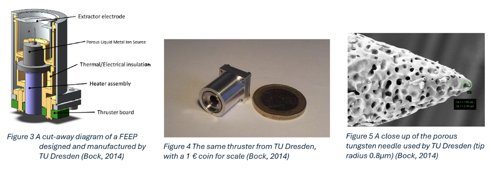
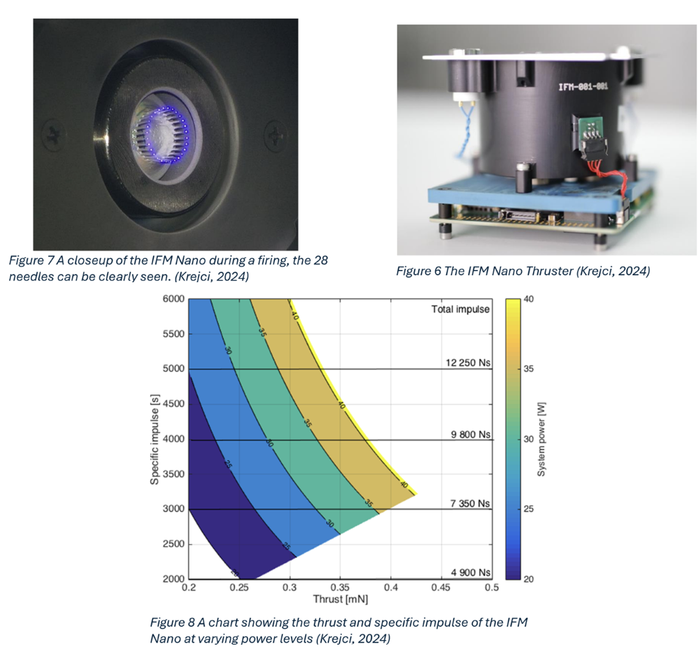
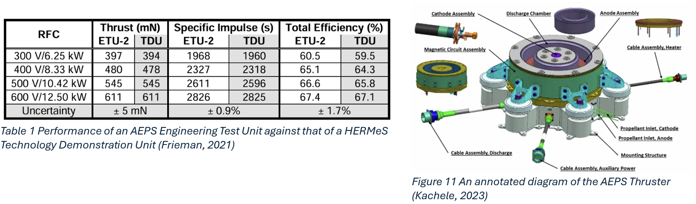

This work presents an overview of the history of electric propulsion from its dawn in the early 20th century to its near future propelling humans where no one has gone before, touches on the basics of rocketry — summarising the Ideal Rocket Equation - - while highlighting the importance of Isp. After having introduced the fundamentals, this article covers both the theory behind, and examples of real-world implementations of two different types of electric propulsion thrusters such as the Field Emission Electric Propulsion thruster and the Hall-Effect Thruster.
Electric Propulsion is a field that has shown extreme growth in recent years, with almost 7000 (Lev, 2019), (McDowell, n.d.)
systems launched since 2019 alone, a number that is set to more than double by the end of the decade (Henry, 2019).
Thrusters vary from micronewton thrusters drawing tens of watts, to thousands of watts, using unusual propellants such
as liquid caesium or supercritical xenon, for applications ranging from 3U cubesats, to NASA’s 18 metric ton Lunar Gateway
space station. This article will provide a general overview of the fundamentals of electric propulsion, and take a closer
look at two implementations, Field-Emission Electric Propulsion, and Hall-Effect thrusters, using the IFM 350 Nano Thruster &
the NASA GRC / Aerojet Rocketdyne Advanced Electric Propulsion System as reference designs for each implementation, respectively.
First theorized in 1911 by Konstantin Tsiolkovsky, it took until 1964 for the first use of an electric thruster on an operational
spacecraft — the Soviet Zond-2 (Antropov, 2017), with the first use on a commercial spacecraft almost 20 years later in 1981 (Mirtich, 1984).
However, it took until the launch of USA-214 / AEHF-1 in 2010, the first in a constellation of 6 geostationary satellites that form
a secure communications network operated by the United States Space Force, for the use of electric propulsion — which will henceforth
be referred to as EP — to really take off. AEHF-1 demonstrated the viability of a fully electric transfer to GEO after its primary
chemical engine failed. When this occurred, the joint-USAF/Lockheed Martin team had to come up with a plan to use the spacecraft’s
4.5kW Hall Effect Thruster, which was originally only intended to be used during the second phase of the spacecraft’s ascent to
geostationary orbit, to take the spacecraft the entire way there from its transfer orbit, a plan that ended up taking 11 months
longer than the original trajectory. (Ray, 2010), (Ray, 2011)
The primary advantage of electric propulsion is that it permits engines to operate a efficiencies far above regular chemical engines.
The upper limit of chemical rocket engine efficiency is around 600 seconds of specific impulse (I_sp) (Clark, 1972), whereas electric
propulsion can range from low 100s to 10,000 seconds (Mazouffre, 2016). But what is efficiency? Why is it measured in seconds? Why is
it important? And how is it calculated? To understand this, we must first understand the ideal rocket equation.
Where Δv is the change in velocity, Isp is the specific impulse — or efficiency — of the engine being used, g0 is standard gravity
— which on earth is 9.806ms-2, mw is the wet (fuelled) mass of the spacecraft, and md is the dry (unfuelled) mass of the spacecraft.
As we can see from the fact that mass ratio is inside a logarithm, and Isp is not, Isp is the variable with the most impact on Δv.
This characteristic of physics provides great benefit to those who use EP and benefit from extremely high specific impulses.
Specific Impulse is the measure of efficiency, using the second as a unit, and in simple terms, refers to how long 1 kilogram of
propellant can accelerate its own mass at 1g. It can be calculated with the equation:
Where ve is the velocity of the engine’s exhaust and g0 is the standard gravity.
FEEP thrusters are mechanically simple, and can be manufactured at extremely small sizes, operating via an extremely high voltage being applied across a sharp needle, which generates a Taylor-cone at the tip, spraying the propellant, which is usually a liquid metal such as Gallium or Indium out at high velocities, which at high enough field strengths — 1010 Vm-1 or greater — evaporates and ionizes the liquid metal, accelerating it towards the extractor electrode, spraying it out at over 100kms-1 , allowing a specifiC impulse of several thousand seconds, albeit at a thrust ranging from several µN to around 1mN (Bock, 2014) The thrust F and specific impulse I_sp of a FEEP can be approximated with the two equations below, where I is the net current, Ve is the potential over the emitter, qe/m is the mass-to-charge ratio of a single ion of the propellant, and g0 is the standard gravity. f is a factor that accounts for beam spread, and η is the mass efficiency of the thruster. (Vasiljevich, 2008)
A full implementation of the FEEP concept, the IFM 350 Nano, is a 190 times flight proven design as of May 2024 (Krejci, 2024). At its base is 28 needles, operating in a similar concept to the thruster illustrated above. The IFM Nano is sold as a 0.8U (0.8U being 80mmx80mmx80mm), with integrated ion emitters (the needles), propellant reservoir, neutralizer, and power processing unit. At this size, it can be easily integrated into a CubeSat bus. It can operate at wattages ranging from 10 to 40W, with a peak thrust of 0.42mN with a resultant specific impulse of 3200s when supplied with 40W of power, but by dropping down to 30W a lower thrust of 0.25mN can be provided at an Isp of 5000s (D. Krejci, 2018). The neutralizer is required, on this and most other electric thrusters, to make the exhaust of the thruster neutrally charged, so that it does not result in a negative charge building up on the spacecraft. This would in turn would result in ions from the exhaust being drawn back to the spacecraft, causing reduced thrust and erosion on the spacecraft. (Patterson, 2015)
One of the primary mechanisms in the functionality of a Hall-Effect thruster is the titular Hall-Effect. The cathode generates electrons which are attracted to the anode which has been charged to an extremely high potential by the thruster’s Power Processing Unit. As the electrons move towards the anode, they encounter an extremely strong magnetic field, which is being produced by the magnetizing coils. The electrons are caught in this magnetic field and flow in a circular motion through the channel in the thruster. This curved motion is caused by the Hall Effect. An inert gas, such as xenon or krypton is then injected into the channel through the anode. The aforementioned trapped electrons collide with the propellant, positively ionizing it. These ions are accelerated out of the channel to an extremely high velocity by the electric field created by the trapped electrons cathode and upon exiting the channel become neutrally charged by electrons from the cathode, creating a plume of neutrally charged plasma.
The L3 Harris Aerojet Rocketdyne Advanced Electric Prolusion System, developed in partnership with the NASA Glenn Research Center and the Jet Propulsion Laboratory, is the highest power flight-rated hall effect thruster ever built, operating at a peak of 12.5 kilowatts with a maximum Isp of 2826s and a peak thrust of 611mN (Frieman, 2021). 3 of these engines, along with 4 significantly smaller BHT-6000s will propel NASA’s Gateway lunar space station when it launches in 2027.
By taking a closer look at Field Emission Electric Propulsion and Hall-Effect thrusters, we can see that electric propulsion is
a widely scalable and versatile technology, that comes in many shapes and sizes, with significantly differing propellants, and
ways of functioning. This is a technology that will continue to be used for many years to come, as for many situations it is
simply the best possible solution. In the near future they will continue to be either cost-optimized or thrust optimized, as
more and more internet megaconstellations are launched into orbit, needing satellites with low-cost electric propulsion,
and space agencies build larger and heavier vessels of exploration, needing larger engines to be powered by far more powerful
power sources. In the longer term, we may see more unusual technologies mature, such as variable specific impulse magnetoplasma
rockets, and gain widespread adoption in the satellite industry.
Anon., 2003. BBC News. [Online]
Available at: http://news.bbc.co.uk/1/hi/sci/tech/3136004.stm
[Accessed 30 11 2024].
Antropov, N. N., 2017. Development of Russian Next-generation Ablative Pulsed Plasma Thrusters. Procedia Engineering, Volume 185, pp. 53-60.
Bock, D., 2014. Development and Testing of a CubeSat with Highly Miniaturised FEEP Thrusters on a Thrust Balance with Sub-Nanonewton Resolution. Toronto, 65th International Astronautical Congress.
Clark, J. D., 1972. Ignition! An Informal History of Liquid Rocket Propellants. 5th printing ed. New Brunswick: Rutgers University Press.
D. Krejci, T. H., 2018. DEMONSTRATION OF THE IFM NANO FEEP THRUSTER IN LOW EARTH ORBIT. Sorrento, IT, 4S Symposium.
Frieman, J. D., 2021. NASA Technical Reports Server. [Online]
Available at: https://ntrs.nasa.gov/citations/20210015721
[Accessed 30 November 2024].
Henry, C., 2019. SpaceNews. [Online]
Available at: https://spacenews.com/spacex-submits-paperwork-for-30000-more-starlink-satellites/
[Accessed 01 11 2024].
Kachele, C., 2023. NASA Technical Reports Server. [Online]
Available at: https://ntrs.nasa.gov/citations/20230002515
[Accessed 30 November 2024].
Krejci, D., 2024. Flight Heritage and Status of the Enpulsion Propulsion Systems: Nano, Nano R3/AR3 and Micro R3. Glasgow, s.n.
Lev, D., 2019. The technological and commercial expansion of electric propulsion. Acta Astronautica, Volume 159, pp. 213-227.
Mazouffre, S., 2016. Electric propulsion for satellites and spacecraft: established technologies and novel approaches. Plasma Sources Science and Technology, April.25(3).
McDowell, J., n.d. Jonathan's Space Report. [Online]
Available at: https://planet4589.org/space/con/star/stats.html
[Accessed 01 11 2024].
Mirtich, M. J., 1984. Resistojet Propulsion for Large Spacecraft Systems, Cleveland, Ohio: NASA Lewis Research Center.
Patterson, M., 2015. NASA. [Online]
Available at: https://www.nasa.gov/wp-content/uploads/2015/08/ionpropfact_sheet_ps-01628.pdf
[Accessed 28 November 2024].
Peterson, P., 2021. Advanced Electric Prolusion System (AEPS) Enabling a Sustainable Return to the Lunar Surface through NASA Gateway. s.l., 74th Annual Gaseous Electronics Conference.
Ray, J., 2010. Spaceflight Now. [Online]
Available at: https://www.spaceflightnow.com/atlas/av019/100830orbit.html
[Accessed 21st November 2024].
Ray, J., 2011. Spaceflight Now. [Online]
Available at: https://spaceflightnow.com/atlas/av019/111009.html
[Accessed 21st November 2024].
Stephenson., R. R., 1995. "Electric Propulsion Development and Application in the United States," Proceedings of the 24th International Electric Propulsion Conference (IEPC).
Moscow, International Electric Propulsion Conference.
Vasiljevich, I., 2008. Development ofan Indium mN-FEEP Thruster. Hartford, CT, 44th AIAA/SAE/ASEE Joint Propulsion Conference.